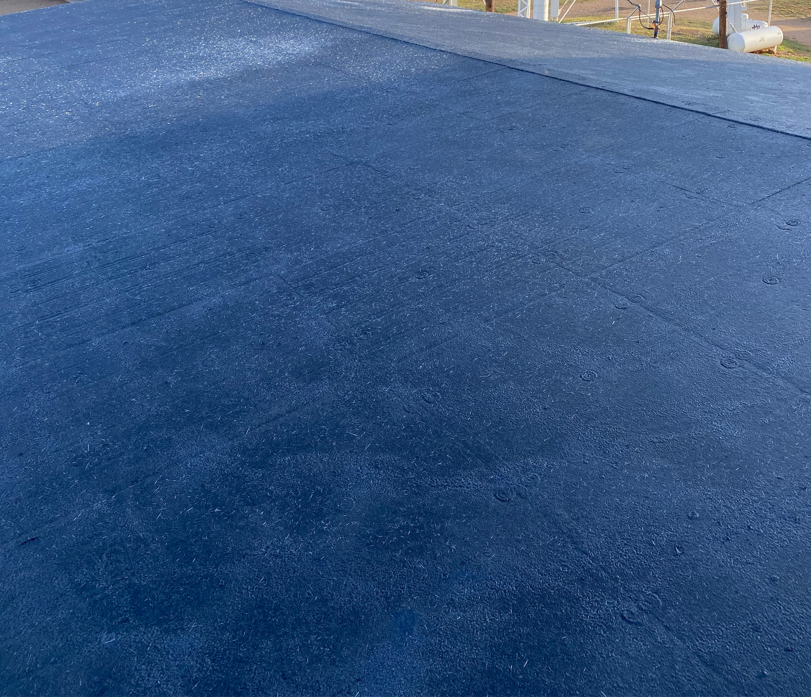

AlligatorHide®
Eco Barrier Primer
AlligatorHide® Eco Barrier is a 1-part, ready-to-use, liquid-applied waterborne styrene/butadiene latex primer/membrane that provides an easy alternative for many waterproofing applications as a base membrane. This monolithic flexible membrane provides excellent performance when used as a base coat over existing surfaces and performs extremely well during continuous water immersion tests.
It can be used for interior or exterior applications, on horizontal or vertical surfaces for residential or commercial purposes, but must be top-coated within five days if used on exterior surfaces to protect it from UV exposure. Waterproofs concrete and protects from silage attack. Important: Mix slowly to prevent incorporating air into the product.
The surface should be smooth or have a light, even texture. Masonry should be flush-pointed, and defects in existing surfaces corrected. The surface should be clean, sound, and free of dust, loose material, or other contaminants that would prevent adhesion. The primer/membrane should not be applied in wet conditions or where these conditions are likely to occur before the primer/membrane has dried. Apply when ambient and surface temperature are 50°F (10°C) and rising.


USES
Serves as a waterproof coating in exposed situations where tile or flooring is used overtop, or as part of a repair system with other approved compatible coatings.
Floors - Under screeds (or above screeds) to provide a waterproof membrane. Do not use where excessive substrate moisture and/or where negative hydrostatic pressure exists.
Basements - As part of a waterproofing system beneath ground level.
Walls - Under render, vapor barrier or a plaster for water barrier.
Roofs - s a waterproofing sealer in a new roof system or as a part of a repair system. Must be top-coated with a compatible roof coating product, applied to manufacturer specification, within five days of application to protect from UV exposure.
Tiling - As secondary protection under tiles in wet areas e.g. bathrooms, food processing areas, balconies, etc.
Water Storage - The membrane performs well, even when continuously immersed in water.